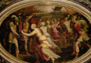

Sabine Women
Once Romulus has established Rome he wants to increase the population. He declares an area of asylum around the Capitoline Hill and many people come for the safety. But there is one significant problem: a shortage of women. With a view to expanding the population, Romulus requests women from the surrounding tribes, who naturally refuse. Romulus therefore brings women to his city through violence and trickery. He invites the Sabines to a festival, but when they come, the Romans take many of the women, thereby starting a war. (see image 1) The Romans and Sabines fight until the Sabines eventually attack Rome. We see again a grim myth of conflict in colonization. In the end, however, the battle between the Romans and the Sabine men is eventually stopped by the Sabine women, now mothers of Roman children, who rush into battle and bring about a truce. (image 2) In an otherwise violent myth of male-dominated colonization, conflict, and rape (the negative aspects of which are highlighted even in antiquity by Ovid in his Ars Amatoria), the Sabine women play a powerful role in bringing about peace and cultural integration in the early foundation myth of Rome.
{kind=link}
{kind=link}